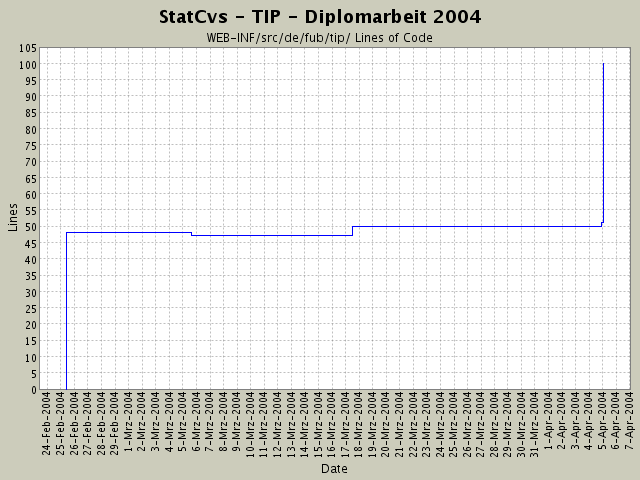

Summary Period: 2004-02-25 to 2004-04-05
[root]/WEB-INF/src/de/fub/tip
 actionforms
(4 files, 563 lines)
actionforms
(4 files, 563 lines)
 actions
(12 files, 1696 lines)
actions
(12 files, 1696 lines)
 admin
(4 files, 384 lines)
admin
(4 files, 384 lines)
 debug
(2 files, 142 lines)
debug
(2 files, 142 lines)
 datenanzeige
(4 files, 411 lines)
datenanzeige
(4 files, 411 lines)
 beans
(2 files, 177 lines)
beans
(2 files, 177 lines)
 container
(6 files, 569 lines)
container
(6 files, 569 lines)
 ormapper
(14 files, 1859 lines)
ormapper
(14 files, 1859 lines)
 datenbank
(3 files, 282 lines)
datenbank
(3 files, 282 lines)
 factory
(13 files, 697 lines)
factory
(13 files, 697 lines)
 logik
(11 files, 3523 lines)
logik
(11 files, 3523 lines)
 exceptions
(8 files, 281 lines)
exceptions
(8 files, 281 lines)
 resources
(4 files, 912 lines)
resources
(4 files, 912 lines)

Total Lines Of Code:
100 (2004-06-13 13:05)
| Author | Changes | Lines of Code | Lines per Change |
|---|---|---|---|
| hirsch | 6 (100.0%) | 111 (100.0%) | 18.5 |
komplettes Dokumentieren der einzelnen Packages nach dem heute
rausgefundenen Schema von SUN -
juchhe!
Viel Tipparbeit - aber jetzt sieht das Javadoc-Resultat
wenigstens wie eine Anwendung aus.
Die neue statcvs-Version ist auch sehr gut!
50 lines of code changed in:
Anpassen des build-Files nach Mail von Richard wegen STATCVS,
Versuch endlich Package-Dokument in JAVADOC zu bringen
(anpassen der Fileset-Filter im build-File beim Kopieren!)
1 lines of code changed in:
javadoc
6 lines of code changed in:
javadoc
5 lines of code changed in:
JavaDoc - Umstellung von lokalen auf Klassenvariablen bei Actions
1 lines of code changed in:
Log4J-Plugin eingebaut
48 lines of code changed in:
Generated by StatCvs v0.2-dev